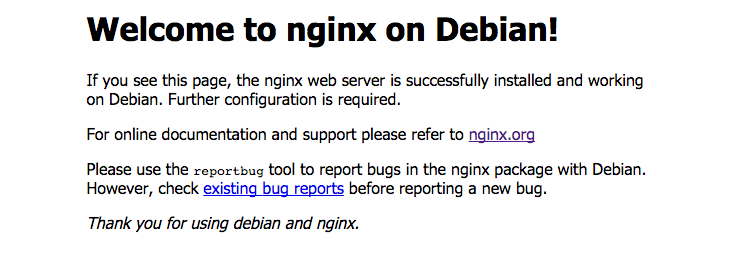

NGINX and Shiny Server Configurations

NGINX is a open-source, high-performance HTTP server with simple configuration and low resource consumption. NGINX powers many top sites, such as Netflix, Airbab, and Github.
In this topic, you will learn how to configure a simple HTTP server and a reverse proxy server for R-shiny with NGINX.
Installation
To download and install NGINX. Execute the following commands.
$ sudo apt-get update && sudo apt-get install nginx
To verify your installation, access http://your-ip-address. You should see the default nginx page like below (if port forwarding is configured correctly).

Simple Configuration
Simple commands for start/stop/restart NGINX server.
$ sudo service nginx stop
$ sudo service nginx start
$ sudo service nginx restart
To make sure that NGINX server will restart automatically after rebooted, execute this:
sudo update-rc.d nginx defaults
HTTP Server Configuration
NGINX's configuration capabilities are extensive and flexible. Thus, we will focus on simple HTTP server configuration for static content in this section.
To configure your server, open /etc/nginx/nginx.conf. This is the global config file of NGINX.
$ vim /etc/nginx/nginx.conf
Next, find the server block within http block, there may be some example or default setting in the block.
http {
# other config blocks...
server {
# some configuration
# set your config here
}
}
Now, let our server listen on the default TCP port 80. Do not forget the trailing semicolon.
server {
listen 80;
}
The default root folder of the web server is /var/www/html. To change files in this path, you should always be a sudoer. For convenience sake, we will change the root path to the home directory of the web server administrator.
First, create a folder www-data in your web admin's home directory and a subfolder named www-data in it. After that, create a new folder in the www-data that named as the domain name/hostname of you server.
$ mkdir -p /home/a-web-admin/www-data/
$ cd /home/a-web-admin/www-data
$ mkdir example.domain
Next, add a server_name and a root parameters into NGINX config file.
server {
listen 80;
server_name example.domain;
root /home/a-web-admin/www-data/example.domain/;
}
Finally, to handle request from clients, add location block inside the server block.
Add the following location block to the server block:
location / {
}
This location block specifies the / prefix compared with the URI from the request. The URI will be added to the root for fetching local data under the root concatenate with / path.
That is, a http://example.domain/image.png request may try to get an image right under you /home/a-web-admin/www-data/example.domain/image.png if exists.
If you add another location like below:
location /image/ {
# other configuration...
}
The requests such as http://example.domain/image/something.jpg would try to get file with the path home/a-web-admin/www-data/example.domain/image/something.jpg.
For further basic configuration, see NGINX Official Tutorial.
R Shiny server with NGINX
R Shiny is a web application framework that can turn analyses into web applications without any web knowledge.
In this section, we will learn how to configure a Shiny server with the power of NGINX.
Install and Configure The Shiny Server
provides a convenient way to install and configure your R-shiny server. However, we would do some trick to combine Shiny and NGINX.
First, install shiny package for R.
$ sudo su - \
-c "R -e \"install.packages('shiny', repos='https://cran.rstudio.com/')\""
Because RStudio company only provides Shiny server of Ubuntu version, we will use this Ubuntu version temporarily.
$ sudo apt-get install gdebi-core
$ wget https://download3.rstudio.org/ubuntu-12.04/x86_64/shiny-server-1.4.2.786-amd64.deb
$ sudo gdebi shiny-server-1.4.2.786-amd64.deb
The default port for R-Shiny server is 3838. That means any can connect to the server through the URL http://
Simple commands for start/stop/restart your shiny-server.
$ sudo systemctl start shiny-server
$ sudo systemctl stop shiny-server
$ sudo systemctl restart shiny-server
The default configure file for shiny-server locates at /etc/shiny-server/shiny-server.conf file. This config file use nearly same syntax and parameters as NGINX config file. For example, if you want to change the default port to 13838, modify it as below;
server {
listen 13838;
# other configuration...
}
Shiny Server administration document explains lots of features clearly. We will only show some useful config in this tutorial.
First, create a new account to manage all Shiny apps.
$ sudo adduser shinyapps
# Then, login as shinyapps. Create a root folder to manage apps.
$ mkdir -p ~/ShinyApps/
Here is the example configuration file at /etc/shiny-server/shiny-server.conf.
server {
listen 3838;
# For root shiny server (in shinyapps user home folder)
location / {
# The shiny-server process would run by user `shinyapps`
run_as shinyapps;
# Save logs here
log_dir /var/log/shiny-server;
# Path to shiny server for separate apps
site_dir /home/shinyapps/ShinyApps;
# List contents of a (non-Shiny-App) directory when clients visit corresponding URIs
directory_index on;
}
# Allow users to host their own apps in `~/ShinyApps`
location /users {
run_as :HOME_USER:;
user_dirs;
}
}
To test your configs, put your Shiny apps in ~/ShinyApps/. Assumed the hierarchy of your shiny app looks like this,
myapps/
├── server.R
└── ui.R
You should move your app folder into ~/ShinyApps/ directory such as ~/ShinyApps/myapps/.
Finally, use a web browser to open http://localhost:3838/myapps/. If you can connect to your app, the shiny server is successfully installed and working.
Add Configurations to NGINX for Shiny Server
If you want to combine Shiny Server with NGINX HTTP Server. Here is the example configuration of NGINX.
server {
# Other locations and configurations...
location /shiny/ { # shiny server will locate at `http://example.domain/shiny/`
rewrite ^/shiny/(.*)$ /$1 break;
proxy_pass http://localhost:3838;
proxy_redirect http://localhost:3838/ $scheme://$host/shiny/;
proxy_http_version 1.1;
proxy_set_header Upgrade $http_upgrade;
proxy_set_header Connection $connection_upgrade;
proxy_read_timeout 20d;
}
}
If your shiny server serves at port 3838, NGINX will pass the request to your shiny server. Then
redirect the URL as something like http://example.domain/shiny/you-apps/.
Other tips
- For more NGINX configuration, see this resource.
- For more Shiny server configs, see this guide.